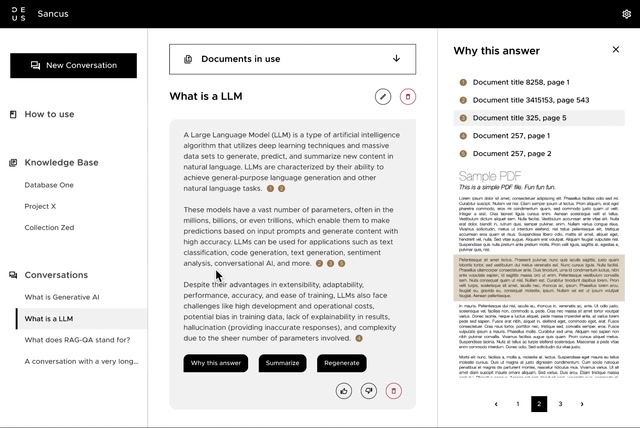

Ask your company's documents a question, and get an answer with the sources to check it.
Company
DEUS.AI, own product
When
2023–2024
My role
Associate PM and lead designer
Scope
Discovery to MVP
Product
B2B SaaS, retrieval-augmented answers
In short
The problem
Company knowledge is spread over documents nobody searches well, and early AI chat answered without sources, so nobody could use it for a decision.
What I did
Aligned stakeholders on vision and roadmap, managed the backlog, ran discovery (jobs to be done, competitors, target journey) and led the UX and UI of the MVP.
The outcome
92.3% of answers rated relevant
In MVP benchmarks. Sancus then became the LLM method inside KB RetroTool.
The MVP, end to end. First-run guide, curating documents, choosing which to chat with, and an answer with sources. One minute, no sound.
Key decisionsCompete on answers people can check
Competitors led with many data connectors; few helped people trust and curate what went in. So the MVP took only PDF, DOCX and TXT uploads, moved Confluence and SharePoint connectors to the beta, and put the effort into answer quality and curation.
Make every answer checkable
Why
Answers carry numbered citations. "Why this answer" opens the source pages with the passage highlighted, next to Summarise, Regenerate and feedback.
Trade-off
Longer answers and a busier chat. An unchecked answer can't go into a report, so verification won.

Why this answer. Sources with page numbers; the passage used is highlighted.
Make curation part of the product
Why
Answers are only as good as the documents. Upload suggests a title and asks for a description, saying why; outdated files can be marked obsolete; each chat uses a chosen set of documents.
Trade-off
An extra step at upload. It's skippable, and the nudge stays on the document so it isn't forgotten.